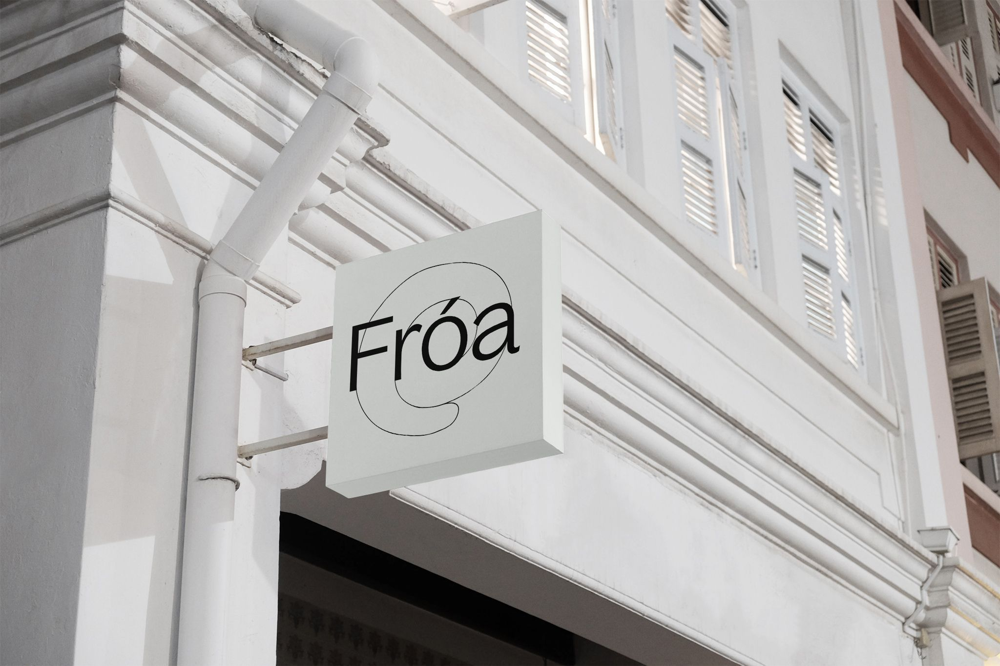
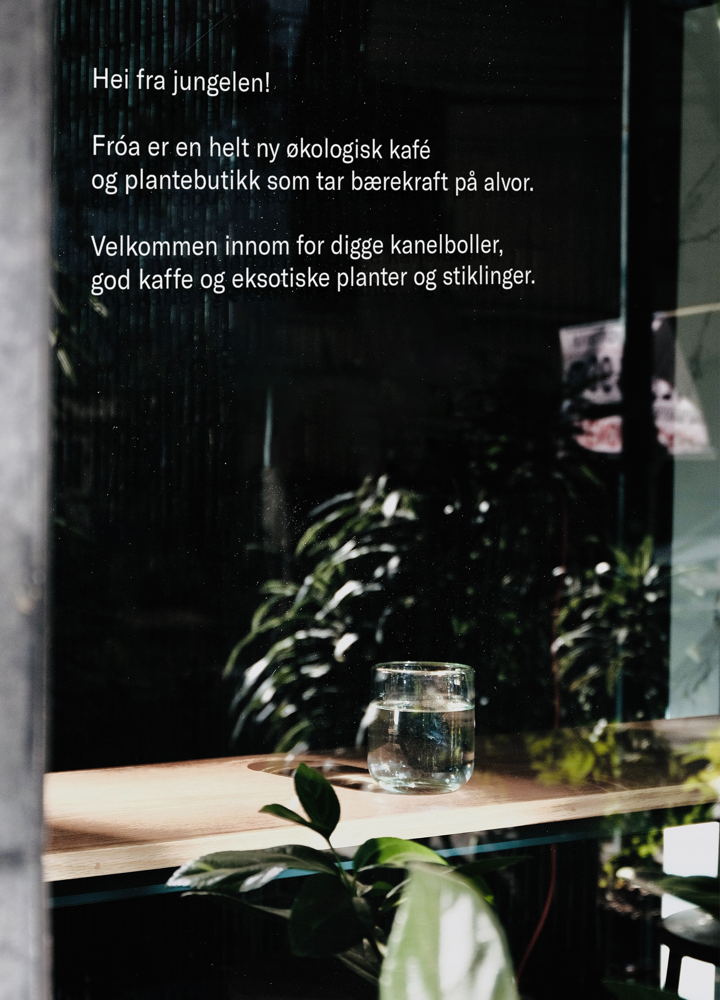
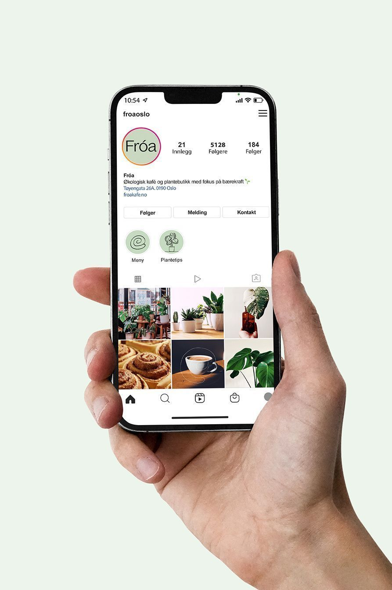
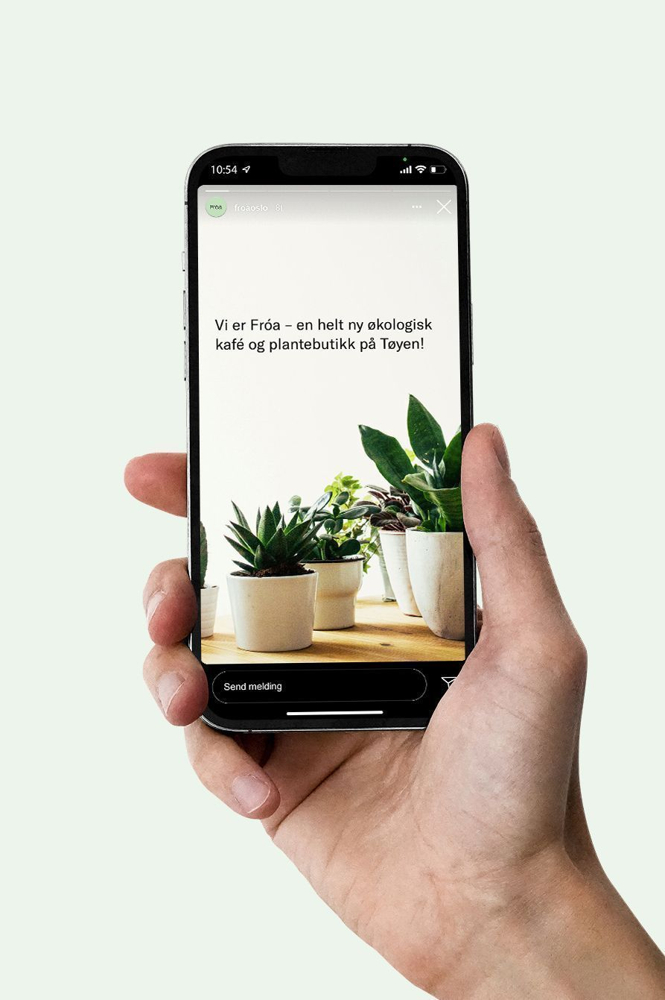

Visual identity for an organic café & plant shop Type of project: Academic project Location: The Oslo School of Architecture and Design Time frame: October 4–27, 2022 Tools: Adobe Illustrator, Adobe Photoshop, Figma    